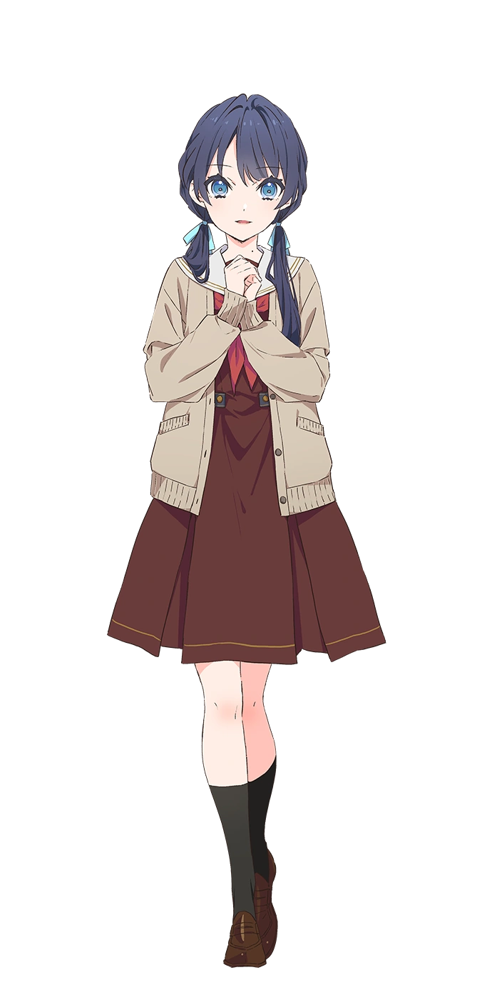

Hasunosora Girls' High School Idol Club (蓮ノ空女学院スクールアイドルクラブ) is the collective name of 6 virtual school idols from Hasunosora Girls' High School that are a part of a smart phone application which was launched on April 15, 2023.
Kaho Hoshita

Kaho Hoshita
Kaho Hoshita
Kaho Hoshita
Kaho Hoshita
Kaho Hoshita
Kaho Hoshita
Kaho Hinoshita is a main character in Link! Like! Love Live!. She is a first year student at Hasunosora Girls' High School. She is a member of Cerise Bouquet, a unit under the Hasunosora Girls' High School Idol Club. Her image color is sun yellow.
| Character | |
|---|---|
| Kanji | 日野下 花帆 |
| Romaji | Hinoshita Kaho |
| Voice Actress | |
| Kanji | 楡井 希実 |
| Romaji | Nirei Nozomi |
Kozue Otomune
Kozue Otomune is a main character in Link! Like! Love Live!. She is a second year student at Hasunosora Girls' High School. She is a member of Cerise Bouquet, a unit under the Hasunosora Girls' High School Idol Club. Her image color is mermaid green.

| Character | |
|---|---|
| Kanji | 乙宗 梢 |
| Romaji | Otomune Kozue |
| Voice Actress | |
| Kanji | 花宮 初奈 |
| Romaji | Hanamiya Nina |
Sayaka Murano
Sayaka Murano is a main character in Link! Like! Love Live!. She is a first year student at Hasunosora Girls' High School. She is a member of DOLLCHESTRA, a unit under the Hasunosora Girls' High School Idol Club. Her image color is ice blue.
| Character | |
|---|---|
| Kanji | 村野 さやか |
| Romaji | Sayaka Murano |
| Voice Actress | |
| Kanji | 野中 ここな |
| Romaji | Nonaka Kokona |
Tsuzuri Yugiri
Tsuzuri Yugiri is a main character in Link! Like! Love Live!. She is a second year student at Hasunosora Girls' High School. She is a member of DOLLCHESTRA, a unit under the Hasunosora Girls' High School Idol Club. Her image color is my red.

| Character | |
|---|---|
| Kanji | 夕霧 綴理 |
| Romaji | Yugiri Tsuzuri |
| Voice Actress | |
| Kanji | 佐々木 琴子 |
| Romaji | Sasaki Kotoko |
Rurino Osawa
Rurino Osawa is a main character in Link! Like! Love Live!. She is a first year student at Hasunosora Girls' High School. She is a member of Mira-Cra Park!, a unit under the Hasunosora Girls' High School Idol Club. Her image color is ruri pink.
| Character | |
|---|---|
| Kanji | 大沢 瑠璃乃 |
| Romaji | Osawa Rurino |
| Voice Actress | |
| Kanji | 菅 叶和 |
| Romaji | Kan Kanna |
Megumi Fujishima
Megumi Fujishima is a main character in Link! Like! Love Live!. She is a second year student at Hasunosora Girls' High School. She is a member of Mira-Cra Park!, a unit under the Hasunosora Girls' High School Idol Club. Her image color is angel white.
| Character | |
|---|---|
| Kanji | 藤島 慈 |
| Romaji | Fujishima Megumi |
| Voice Actress | |
| Kanji | 月音 こな |
| Romaji | Tsukine Kona |